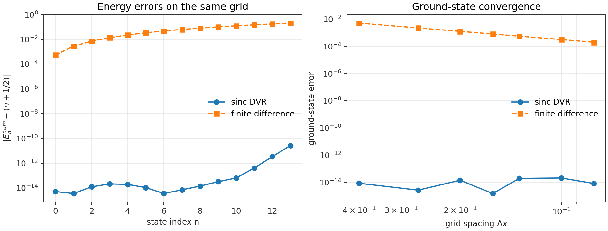

DVR Series - Part I
Wavepacket Dynamics Methods
This series starts from a numerical question: when a continuous Schrodinger equation becomes a finite matrix problem, what has actually been approximated? DVR and finite difference can both converge to the same continuum physics, but their finite-dimensional pictures are very different.
The common target
All notes in this series are organized around the time-dependent Schrodinger equation
with initial condition \(\psi(0)=\psi_0\). If \(\hat H\) is time independent, the exact formal solution is
The numerical task has two layers: approximate the continuous coordinate Hilbert space, then apply the exponential time-evolution operator accurately enough for the observable of interest.
Continuous operator viewpoint
In the continuum, the Hamiltonian is an unbounded self-adjoint operator on a domain inside \(L^2(\mathbb{R})\). That statement sounds abstract, but it carries a practical warning: the true object is infinite dimensional and may contain both bound and scattering parts of the spectrum.
A numerical method replaces this operator by a finite one. The relevant question is not whether the matrix is "the Hamiltonian"; it is which limiting process makes the matrix approach the continuum Hamiltonian.
DVR as projection
A discrete variable representation can be understood as a projection of the continuous Hamiltonian onto a finite basis:
When \(P_N\) approaches the identity strongly and the chosen finite subspace becomes dense enough in the Hamiltonian domain, the projected dynamics approximates the continuum dynamics. In computation this translates to a more concrete rule: the grid must cover the physically visited region and resolve the shortest wavelength that matters.
Finite difference as an auxiliary lattice
Finite difference starts from a local derivative stencil. For the second derivative, the standard central stencil is
This produces a tridiagonal kinetic matrix. In a sinc DVR, by contrast, the kinetic matrix is dense but structured:
The finite-difference stencil is local and easy to scale. The DVR kinetic operator is nonlocal, but it retains a spectral character that is valuable for small quantum benchmark problems.
A small benchmark
As a first check, compare both discretizations on the harmonic oscillator with \(\hbar=m=\omega=1\). The exact energies are \(E_n=n+1/2\), so the numerical error can be read directly from the eigenvalues of the finite Hamiltonian.

This benchmark is not a claim that DVR always wins. It says something narrower and more useful: for smooth low-dimensional reference problems, the dense sinc kinetic matrix can reach spectral accuracy with modest grid sizes. That is why it is a good basis for the later operator and correlation-function notes.
Exact finite-dimensional evolution
After a DVR Hamiltonian matrix has been assembled, real-time evolution can be performed by diagonalization, matrix exponentiation, or a stable Krylov method. A simple explicit finite-difference update, for comparison, has the recurrence form
Its accuracy is tied simultaneously to \(\Delta x\) and \(\Delta t\). DVR is not automatically cheaper, but it gives a clean finite Hamiltonian whose spectral structure can be inspected directly.
Practical takeaway
I use DVR in the later notes because the target systems are small enough for dense matrices, and the desired outputs are reference-quality quantum wavepacket dynamics and Kubo correlation functions. The cost is larger memory and matrix algebra; the gain is a transparent operator representation.
The next note zooms in on the matrix objects themselves: kinetic blocks, local potentials, side projectors, and flux commutators.
Code used in this note
- dvr_fd_benchmark.py builds the harmonic-oscillator benchmark and regenerates the figure above.
- dvr_kubo_minimal.py collects the shared sinc DVR, finite-difference, wavepacket, Kubo, side, and flux routines used across the series.